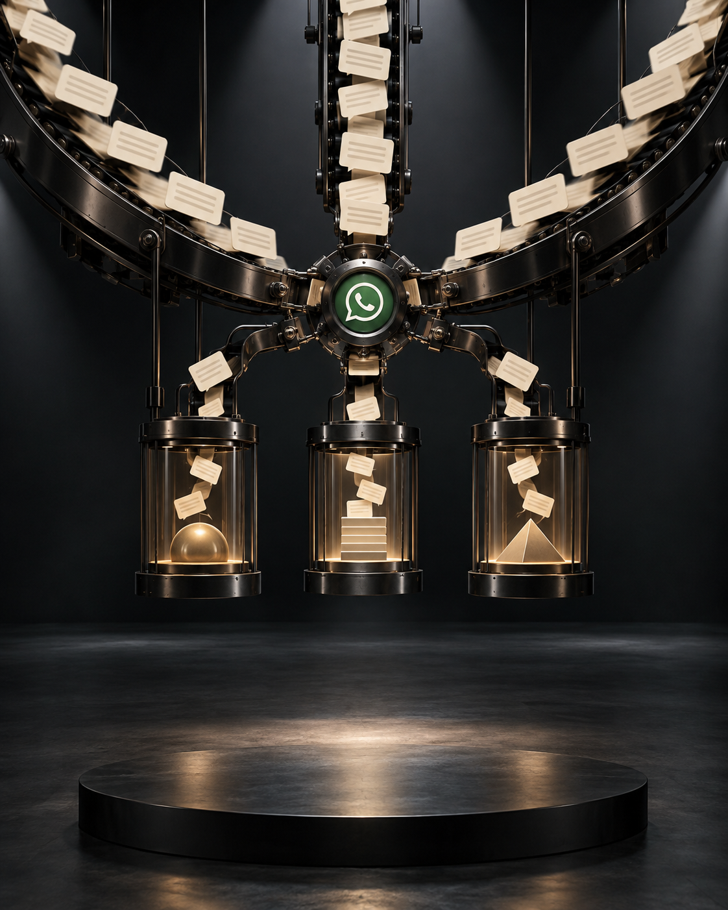

A conversa agora pode mover negócios.
WHATSAPP PODE COMEÇAR A OPERAR A VENDA.
A Meta simplificou a conexão de IAs de terceiros ao WhatsApp Business, com agentes criados por conversa e sem código.
A mudança
A META ABRIU A PORTA PARA O CHATBOT QUE SUA EMPRESA ESCOLHER.
Com o WhatsApp Business Tools MCP, marcas podem conectar uma ferramenta de IA de terceiros à plataforma e definir perfis, respostas e ações de agentes.
Em português claro
VOCÊ DESCREVE A TAREFA. A IA AJUDA A CONSTRUIR O FLUXO.
Em vez de desenvolver cada automação, o time pode explicar em linguagem natural o que precisa: um agente, uma resposta ou um processo de marketing.

O potencial para B2B
MENOS ATRITO ENTRE A PERGUNTA DO LEAD E A PRÓXIMA AÇÃO.
Qualificação, envio de conteúdo, suporte inicial e encaminhamento comercial podem ganhar uma camada sempre ativa no canal em que a conversa já acontece.
Não é só atendimento
O WHATSAPP PODE VIRAR UMA INTERFACE OPERACIONAL DE MARKETING.
Uma marca pode solicitar, por conversa, a criação de um modelo de mensagem ou de um fluxo. A ferramenta conectada traduz o pedido em requisitos para configurar a funcionalidade.
Por onde começar
A AUTOMAÇÃO SÓ É BOA QUANDO A JORNADA É CLARA.
A pergunta para empresas
SEU WHATSAPP SÓ RECEBE MENSAGENS OU MOVE O NEGÓCIO?
IA no canal não substitui estratégia. Pode transformar conversas dispersas em uma operação mais útil para clientes e vendas.
CURTA · SALVE · COMENTE · COMPARTILHE